PathToTheFolderOfInterest <- file.path("C:", "CytekbioExport")
PathToTheFolderOfInterest[1] "C:/CytekbioExport"As mentioned in the introduction, within the .R and .qmd files are lines of code containing file.paths. These serve as addresses used by the software to find folders containing the necessary daily QC files on your individual computer. Since installation of SpectroFlo (and its associated files) will differ on your computer compared to ours, you will need to ensure to update these file paths so that your computer can retrieve the daily QC files from the correct folder when prompted to do so by the executed R scripts.
For this section, we will focus on data, as it is where new QC files get copied to, processed and stored, and subsequently used in assembly of the dashboard website.
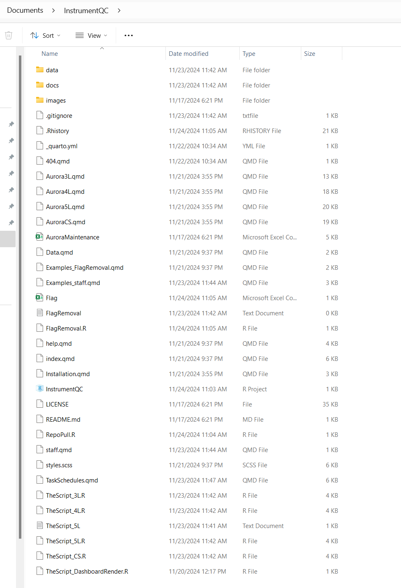
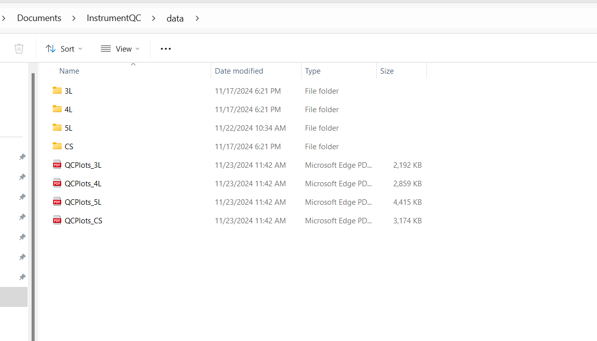
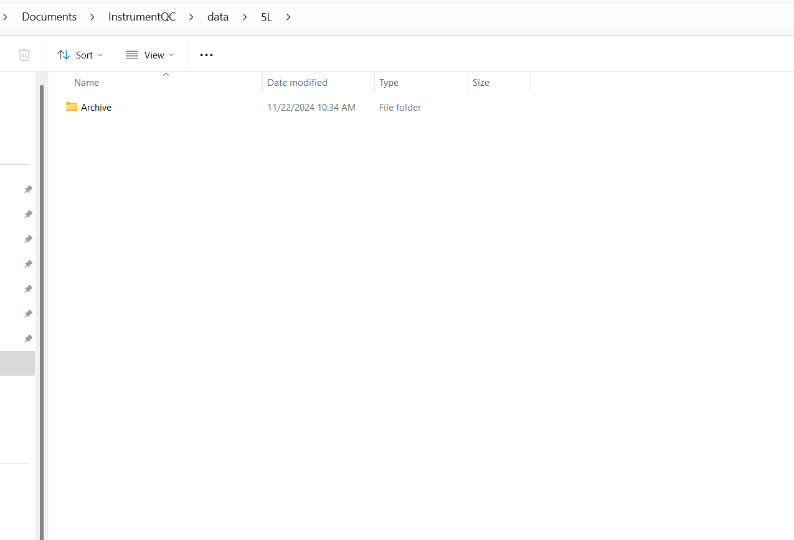
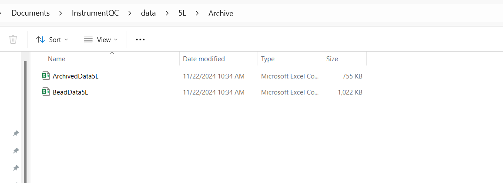
Let’s now start by locating your SpectroFlo associated folders you will need to have the file.paths for when modifying the R scripts. On our computer, when the instruments were set up, these were present within the local C: drive folder
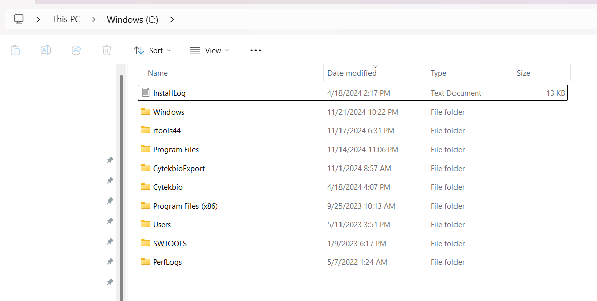
You can notice there are two SpectroFlo associated folders present here, Cytekbio and Cytekbioexport. When we retrieve a file.path, we would right click the > symbol. Then we would select the copy address as text option
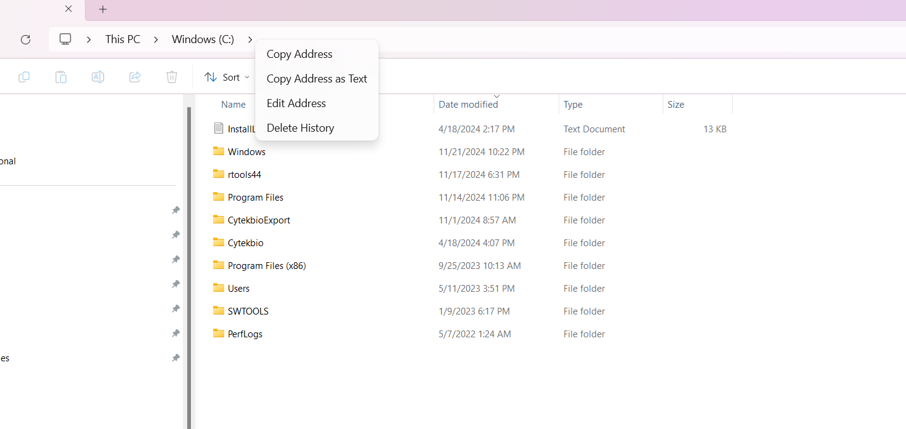 When we paste, we get something like this: C:\Cytekbio. The designates a hierarchy of folders descending down to the target folder or file. When working in R, we can reference this by taking the individual folder names and linking them with the file.path function. For this example, it would look something like the following for C:\Cytekbio :
[1] "C:/CytekbioExport"One of the reasons file.path only needs the folder names is \ vs / will vary depending on what operating system your computer is running on (Windows, Mac or Linux). Additionally, R requires Windows paths that when we right-click copy are shown as \ be switched to /. Using file.path is easier in the long run than needing to remember which is permitted and which one is not.
Additionally, extra elements can be appended to the file.path by simply including the existing path variable, and then adding the next folder in between ““. For example:
[1] "C:/CytekbioExport/Experiments"We can see that this is the next folder under, so let’s double click and find the file structure.
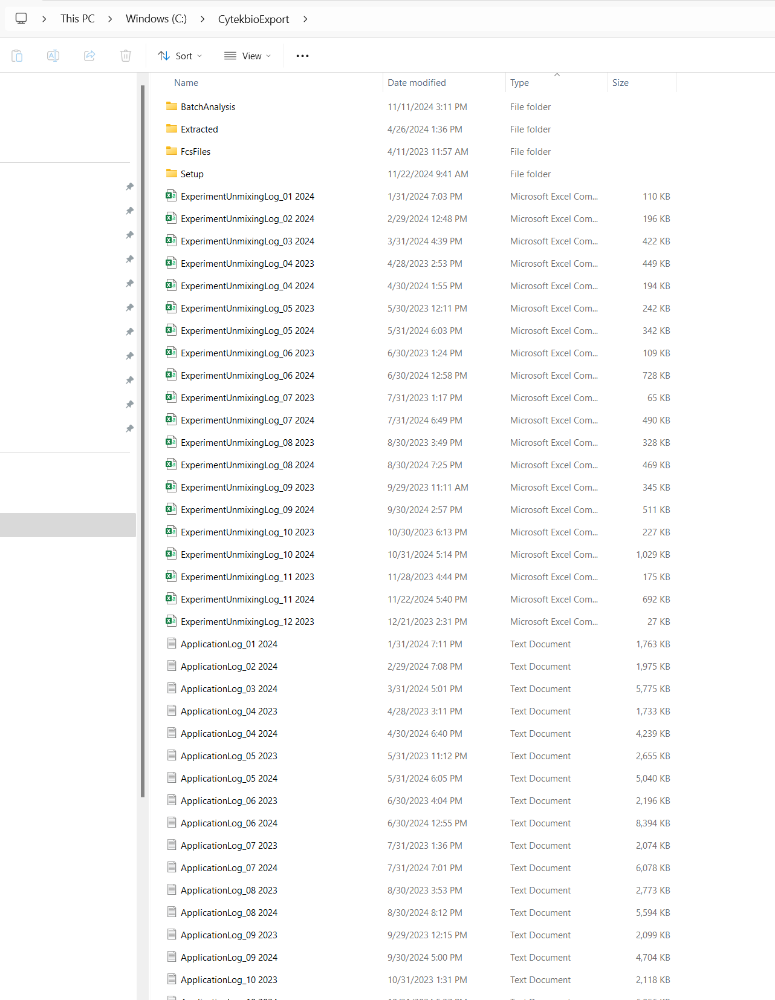 We can see in this case that we have folders for Experiments, FCSFiles and Setup. Additionally there are files for individual dates for SetupEngineLog, AppLoginLog and ExperimentUnmixingLog that track activity previously carried out in SpectroFlo. We will navigate to the next folder “Setup”
[1] "C:/CytekbioExport/Experiments/Setup"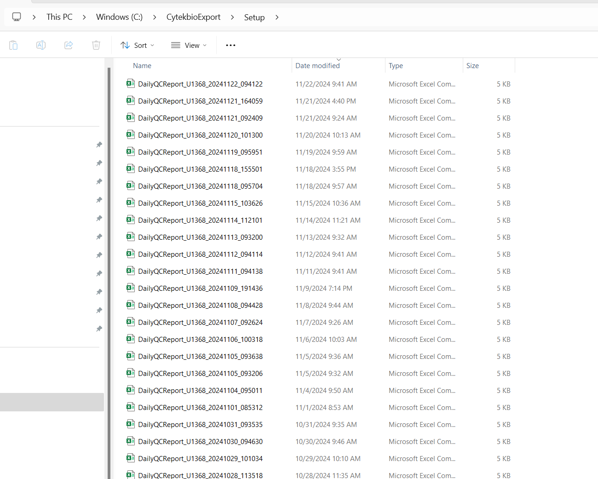
It is within this folder that the DailyQC reports are stored as .csv files. Opening one, we can see their overall structure resembles something like this. The individual elements are beyond the scope of this tutorial, but the data from the majority gets extracted out and utilized for the dashboard.
Unfortunately, the .csv does not follow a “tidy” format (having gaps in spaces and rows rather than equally filled rectangular space). Consequently, a bunch of functions are used to process the data behind the scenes until it is returned in a “tidy” format that R can work with (these can later be downloaded from the Data tab on the dashboard).
It’s this path (SetupFolderPath) that we will need to provide to the Rscript so that it can locate new DailyQC .csv files and copy them over to the InstrumentQC folder. Make a note of this path before we continue.
If we are relying on the .fcs files acquired during the process of DailyQC, we would navigate from this folder down one additional level.
[1] "C:/CytekbioExport/Experiments/Setup/DailyQC"It is here where we find the DailyQCDataSample .fcs files.
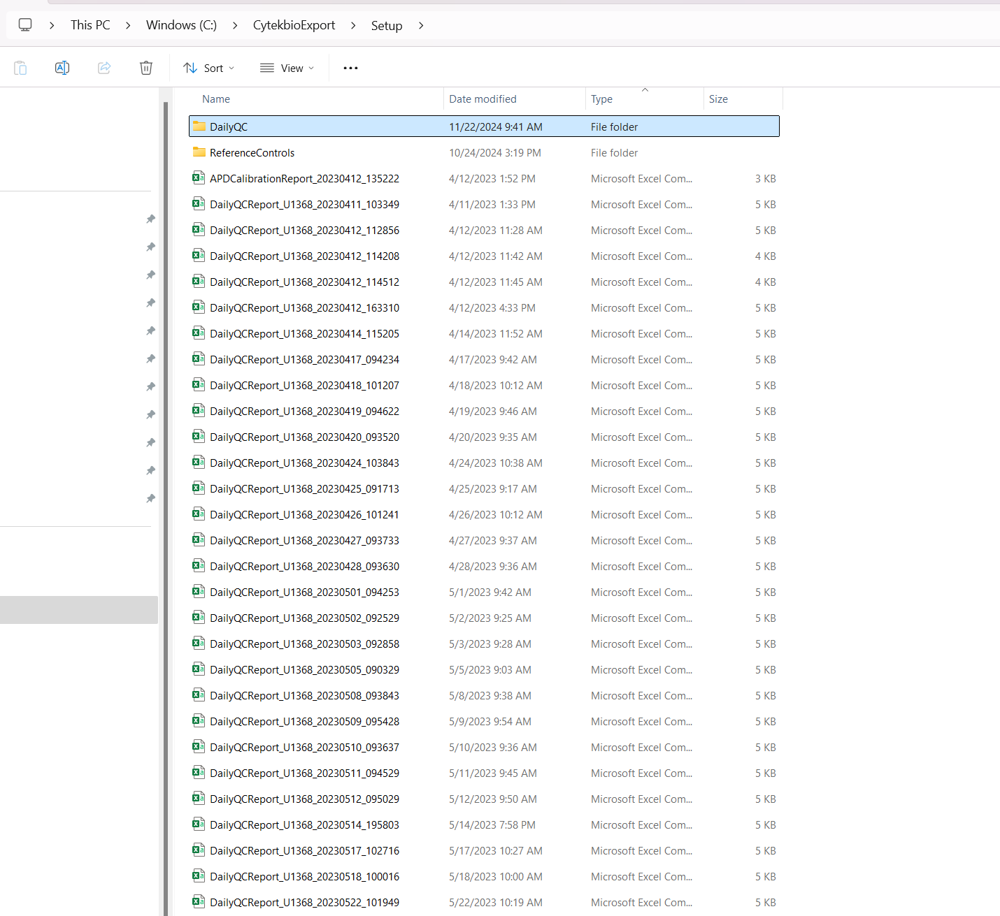
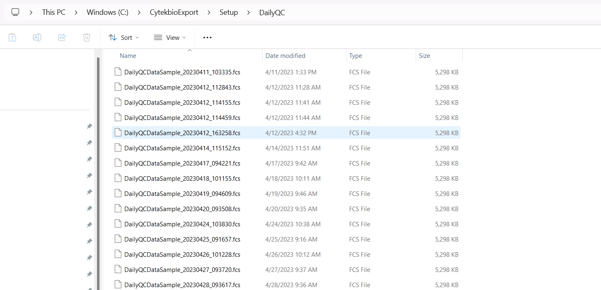
We would consequently provide this file.path to the Rscript to provision the files needed to calculate the MFI parameters.
At our institution, we separately using the the same QC beads used for Daily QC a 3000 bead before and after .fcs sample to compare the changes in MFI after the QC has adjusted. Within SpectroFlo, these are acquired under the Admin account, organized within an experiment corresponding to the month. As a result, these are stored with the other .fcs files acquired by all users that exist within SpectroFlo folder while they wait to be exported as zipped folders.
Because this can take up quite a bit of memory space in context of a core facility, for our particular SpectroFlo setup, these folders are found under an external hard-drive.
We would consequently start exploring the folders (and setting up a file.path) like this:
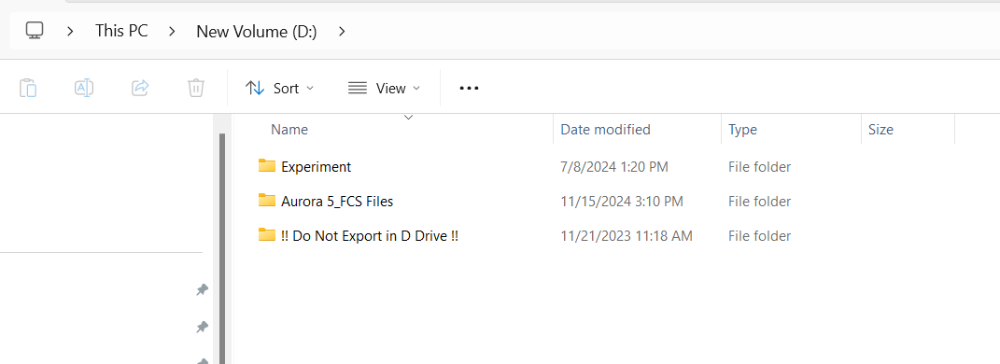
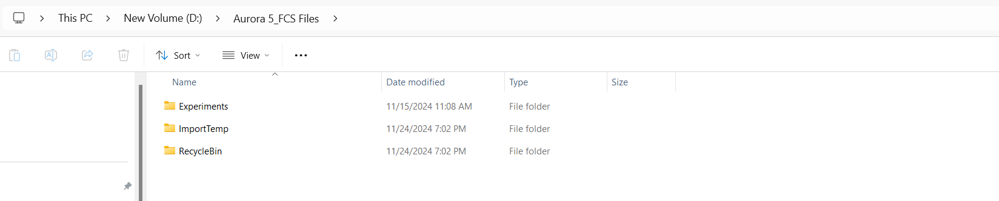
[1] "D:/Aurora 5 FCS_Files/Experiments"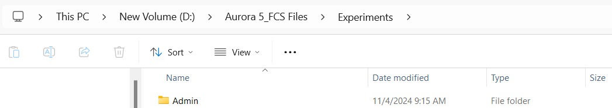
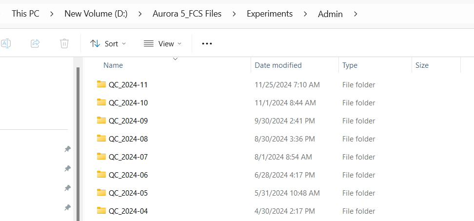 And finally, the important thing is to note the structure that each experiment file name takes. In our case for this instrument, the folders are set to QC_2024-11. When we are having the Rscript find the new QC files for the given day, it calls the function System.time to return the date and time. These are broken into month and day.
Consequently, at the level of this folder, it would look for a folder named “QC_2024-” with the corresponding month provided by Sys.time call. R recognizes character strings exactly in this case, so if you had a name mismatch (ex. “QC 2024-” or “QC_2024_”) it would fail to find the correct folder and search the contents within. So this is an area to be aware of and adjust the code accordingly for how you structure the name.
start with the easiest file.path, we need to find the location you saved the InstrumentQC project to when you downloaded it from Github via Rstudio (recall the browse button to see where it was saved).
Within the InstrumentQC folder, the first level contains the individual R scripts and .qmd files for each instrument, as well as additional files needed for the automation, and dashboard assembly. Below this level, there is a data folder containing folders for the individual instruments. Below this level, are folders containing the archive data folders where processed data is stored after processing and updated with new data daily.
On first install, modify the names of the folders for your individual instruments, and navigate into the archive folders for the renamed instruments and delete the forked version of the data. These archive data files will be replaced by those of your own instrument after the initial processing.
Next, you will need to modify the existing Rscript to match the following names, and to point at the Cytekbio Setup folder containing the DailyQC files and to the folder containing the bead .fcs files used as part of the MFI monitoring. Make sure these are correct.
Now, on the upper right hand side, hit the Source option. This should trigger the processing of the entire R script needed to process the past data. If it fails, you will need to troubleshoot whether the file.path your provided is the correct one (most likely error) or an R package dependency is missing (in which case it would need to be installed).
Once complete, you should see the processed data is now present within the Archive folder.
Open up the equivalent .qmd file for your given instrument. This file is what will build the dashboard for the equivalent instrument page on the website. Make sure to similarly modify the file.paths at the top of the file so they match your Archive folder for that project. Once done, hit render button and wait, troubleshooting as needed. Both R script and .qmd will be specific and search for the data within those folders, so we anticipate less issues.
Once done, either a browser window will open showing the data for the instrument, or you will need to go to InstrumentQC, docs folder and open the index.html file to see a local rendered version of the file. Once you are here, congratulations, the basic install for your instrument has been carried out successfully. Repeat for the other instruments for the time being.